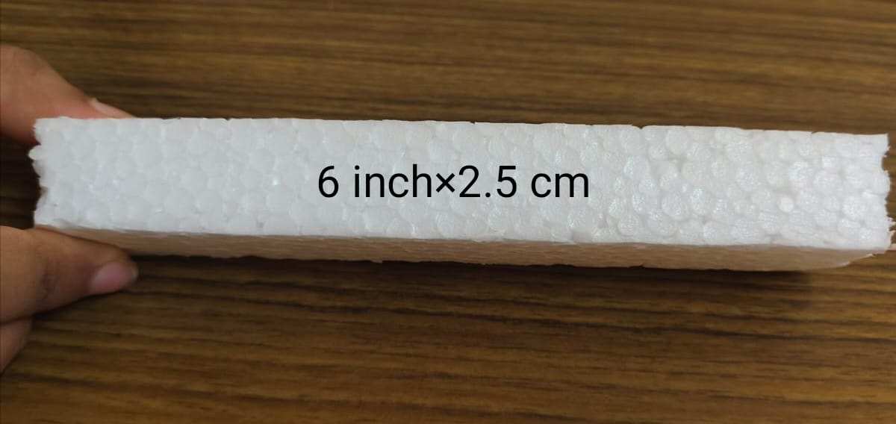

SOLAR TRACKING SYSTEM
What is a Solar Tracker?
A solar tracker is a device that follows the sun as it moves across the sky. When solar trackers are
coupled with solar panels, the panels can follow the path of the sun and produce more renewable energy for
you to use.
Solar trackers are usually paired with ground mount solar systems but recently, rooftop-mounted trackers
have come onto the market.
Typically, solar tracking equipment will be connected to the racking of the solar panels. From there, the
solar panels will be able to move along with the movement of the sun.
Solar Tracker using Arduino
A solar tracker is a device that orients solar panels, mirrors, or other devices toward the sun to maximize the
absorption of sunlight. The main necessity of using a solar tracker, particularly one controlled by Arduino,
lies in optimizing the efficiency and output of solar energy systems. Key reasons for using a solar tracker:
- Increased Energy Harvesting Efficiency:Solar panels generate the maximum power
when they are directly facing the sun. A solar tracker ensures that the panels are always oriented
towards the sun, maximizing the amount of sunlight they receive throughout the day. This can
significantly increase the overall energy harvesting efficiency of a solar power system.
- Enhanced Power Output: By keeping solar panels aligned with the sun's position, a
solar tracker can boost the overall power output of a solar energy system. This is particularly
important in locations where sunlight conditions vary throughout the day and across seasons.
- Optimal Angle Adjustment: Solar trackers can adjust the tilt angle of solar panels to
account for the changing position of the sun in the sky. This is crucial for capturing sunlight more
effectively, especially in regions with a significant variation in the sun's angle throughout the day
and across different seasons.
- Adaptation to Environmental Changes: Weather conditions, such as clouds or haze, can
impact the amount of sunlight reaching solar panels. A solar tracker can dynamically adjust the
position of the panels to adapt to these changes, maintaining optimal alignment with the sun and
mitigating the impact of environmental factors on energy production.
- Educational and DIY Projects: Building a solar tracker using Arduino can be an
educational and engaging project for students and DIY enthusiasts. It provides an opportunity to
learn about solar energy, electronics, programming, and automation. Arduino is a popular choice for
controlling solar trackers due to its ease of use, versatility, and affordability. By using sensors
and actuators, an Arduino-based solar tracker can continuously monitor the position of the sun and
adjust the orientation of the solar panels accordingly, ensuring maximum energy capture.
ABOUT OUR PROJECT
Components Used:
-
Software Used
Arduino IDE: The Arduino Integrated Development
Environment (IDE) is a software platform used for writing, compiling, and uploading code to
Arduino microcontroller boards. It provides a user-friendly interface that simplifies the
process of programming Arduino boards, making it accessible to beginners and experienced
developers alike.
-
Hardware Used
- Arduino Uno: The Uno is one of the more popular boards in the
Arduino family and a great choice for beginners. The Arduino hardware and software was
designed for artists, designers, hobbyists, hackers, newbies, and anyone interested in
creating interactive objects or environments. Arduino can interact with buttons, LEDs,
motors, speakers, GPS units, cameras, the internet, and even your smart-phone or your TV.
This flexibility combined with the fact that the Arduino software is free, the hardware
boards are pretty cheap, and both the software and hardware are easy to learn has led to a
large community of users who have contributed code and released instructions for a huge
variety of Arduino-based projects.
- Solar Panel: Solar panels in a solar tracker are photovoltaic
devices that convert sunlight into electricity. Integrated into the tracker, these panels
are dynamically adjusted to optimize their orientation, ensuring they face the sun for
maximum energy absorption. The solar tracker's movement, guided by sensors and control
systems, allows the panels to follow the sun's path throughout the day. This dynamic
alignment significantly improves energy efficiency compared to fixed solar panel
installations. Solar trackers, with their adaptability, are particularly effective in
maximizing electricity generation in varying environmental conditions.
- SG90 servo motor: The SG90 servo motor is a compact, lightweight
device widely used in hobbyist and small-scale electronics projects. It is a type of rotary
actuator that operates with precision and control. The SG90 is known for its affordability
and versatility, making it popular for applications such as model airplanes, cars, and
robotic projects. With a 180-degree range of motion, the SG90 is controlled by sending
electrical pulses to determine the desired position, and it includes a feedback mechanism to
ensure accurate positioning. Its small size, ease of use, and relatively low cost make the
SG90 servo motor a common choice for various DIY and prototyping endeavors.
- LDR sensor: An LDR (Light Dependent Resistor) sensor is a type of
electronic component that exhibits a change in resistance based on the intensity of light
falling on it. Also known as a photoresistor, the LDR's resistance decreases as the ambient
light level increases, and vice versa. This property makes it widely used in
light-sensitive applications, such as automatic streetlights, photography exposure control,
and ambient light detection in electronic devices. The LDR operates on the principle of the
photoconductivity effect, where the conductivity of the semiconductor material within the
sensor varies with light exposure. It is commonly employed as a simple and cost-effective
solution for detecting and responding to changes in light conditions in various electronic
and electrical systems.
- Resistor: A resistor is a passive two-terminal electronic component
that impedes the flow of electric current. It is designed to introduce a specific amount of
resistance into an electrical circuit, thereby controlling the current flow and voltage
levels. Resistors find widespread use in electronic circuits to limit current, divide
voltages, set bias points, and perform other functions essential for proper circuit
operation. They play a fundamental role in shaping and controlling the behavior of electrical
circuits in electronic devices and systems.
- Jump wires and Foam board: Jump wires and foam boards are integral
elements in electronics and prototyping endeavors. Jump wires, with their flexible design
and connectors, serve as indispensable tools for establishing electrical connections between
components on a breadboard or within an electronic circuit. Their various lengths and colors
facilitate adaptable and temporary linkages during the testing and development phases of
projects. Complementing this, foam boards, composed of polystyrene foam encased between
paper or plastic sheets, provide a lightweight and rigid foundation for physical
prototypes.
Step by step procedure
Step-1
Cut the base part of the project. To do this,we used the following measurements.

Step-2
Attach the following pieces to the base part.
Step-3
Attach the servo motor. For that, use the pictures below.
Step-4
Attach two pieces of rigifoam to the solar panel. After, attach an iron stick to one side of the solar panel.
Step-5
Solder the 10k resistor to one leg of the LDR. Also, solder this way for both sensors.(But as of now we have used breadboard).Solder these sensors together.
Conclusion:
The solar tracking system designed with Arduino, servo motor, and LDR sensors presents
an efficient and cost-effective solution for optimizing solar panel orientation. The LDR
sensors accurately measure light intensity, allowing the servo motor to dynamically adjust
the solar panel angles. This dynamic adjustment ensures that the solar panels consistently
face the sun, significantly improving energy absorption and overall efficiency.
The incorporation of the Blynk app integration adds a remote control and monitoring aspect
to the system. Users can interact with the solar tracker through the Blynk app, offering a
convenient and user-friendly interface for adjusting settings and monitoring the system's
performance.
The project showcases the practical application of basic electronic components,
demonstrating how an Arduino, servo motor, and sensors can be integrated to create a
functional and responsive solar tracking system. The versatility of the system is enhanced
by its adaptability to changing light conditions, contributing to increased energy harvesting
and making it a valuable solution for solar power optimization.
In conclusion, this solar tracking project combines simplicity with effectiveness, making it
suitable for educational purposes, small-scale solar applications, and as a foundation for
further exploration into renewable energy systems